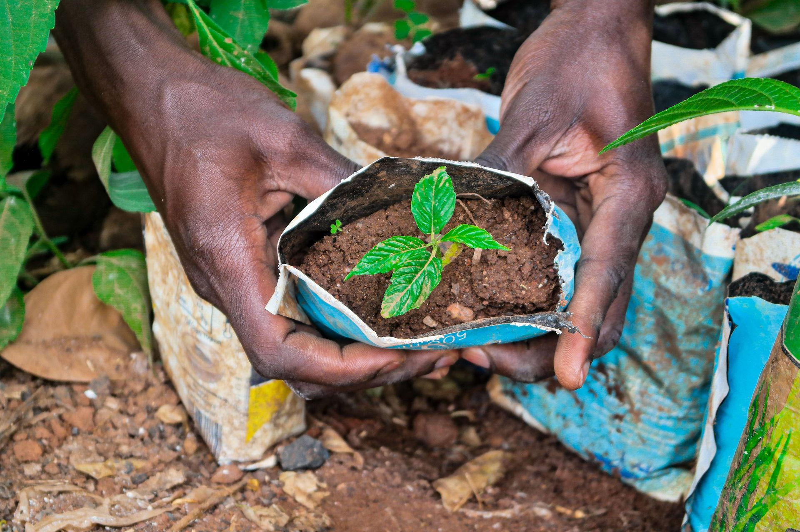
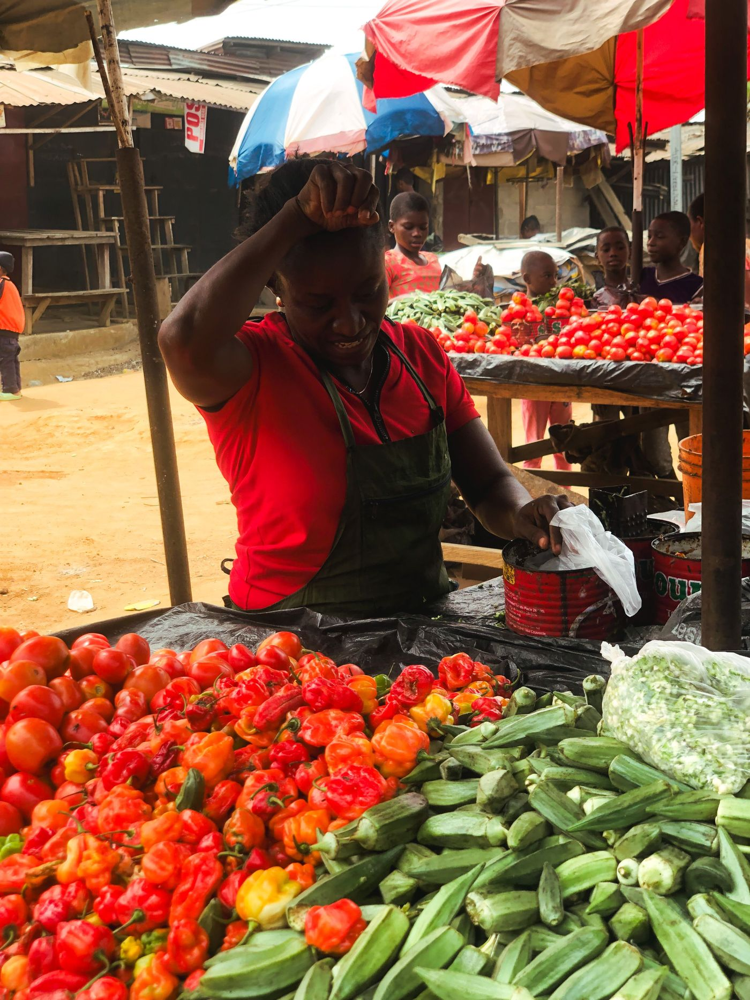
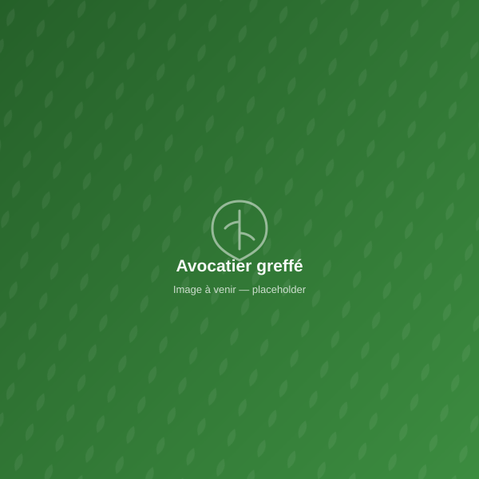
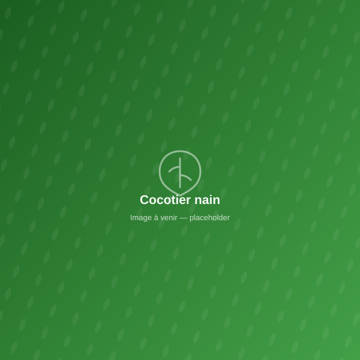
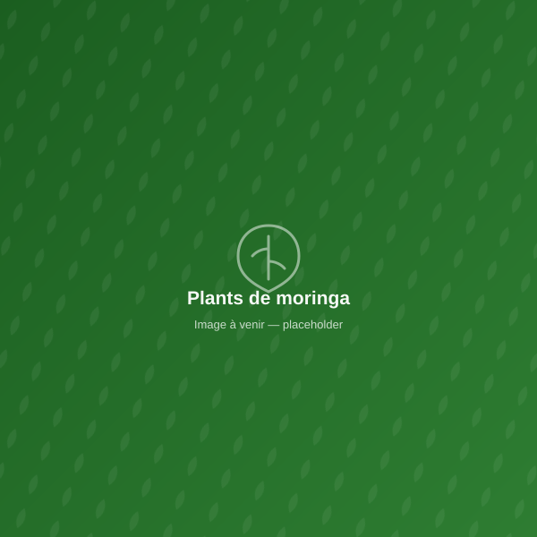

Pépinière & plants tropicaux
Manguiers, avocatiers, teck et plus — sélectionnés et suivis en pépinière.

AgriWin Togo accompagne particuliers, entreprises, porteurs de projets et ONG : conseil agricole, formation, plants tropicaux et écoulement de produits — au Togo, en Afrique de l'Ouest et à l'international.

« Nous voulons que chaque client, qu'il soit à Kégué ou à l'international, reçoive des plants de qualité et un accompagnement dans lequel il peut avoir une confiance totale. C'est notre engagement depuis le premier jour. »KEGNON EmmanuelFondateur & CEO, AgriWin Togo
Portrait présenté à titre de style pour cette maquette — sera remplacé par une photo du fondateur ou de l'équipe AgriWin Togo.
Manguiers, avocatiers, teck et plus — sélectionnés et suivis en pépinière.

Préparation de terrain, plantation, entretien et suivi technique.

Mise en relation avec des acheteurs fiables, locaux et internationaux.
Sessions pratiques pour particuliers, coopératives et porteurs de projets.
En savoir plusConseil et fourniture de sujets pour démarrer votre élevage.
En savoir plus
Manguiers, avocatiers, cocotiers, agrumes, teck, moringa... chaque plant est contrôlé avant de quitter notre pépinière de Kégué.
Découvrir nos plantsVariété améliorée, entrée en production précoce.

Variétés Hass et locale, qualité export.

Haut rendement, idéal zones côtières.

Croissance rapide, multiples vertus.
Mise en terre d'un jeune plant
Photos de style illustrant l'univers visuel proposé pour cette maquette. Elles seront remplacées par vos propres photos (pépinière, équipe, réalisations) dès qu'elles nous seront transmises.
Décrivez-nous votre besoin : nos experts vous répondent rapidement avec une solution adaptée et un devis clair.